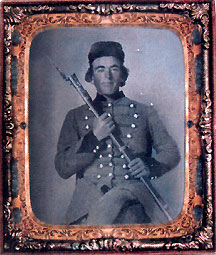

|

NAME: George Johnson
BORN: 1842
DIED: 1901
ALLEGIANCE: Confederate
HIGHEST RANK: Private
UNIT: 3rd Georgia Infantry, Company C; Cobb's Legion
RECORD: Enlisted April 24, 1861, and mustered in at
Augusta in May; transferred to Cobb's Legion in October
1862; hospitalized for three days in December 1864; paroled
in Greensboro, North Carolina, in May 1865.
|
|
"Come tighten your girth and slacken your rein/Come buckle
your blanket and holster again/Try the click of your trigger
and balance Your blade/For he must ride sure that goes
Riding a Raid!" With these words an anonymous Confederate
paid tribute to the saber-wearing soldiers of the cavalry.
Whether it was the association with knights and musketeers
or the fact that the everyday life of the cavalry was a step
up from that of the infantry, a transfer into the saddle was
a high point in the military careers of many enlisted men.
It certainly was for Private George Johnson.
Johnson joined the Dawson Greys, an infantry unit, in his
hometown of Penfield, Georgia, in the spring of 1861; he was
19 years old. Mustered into service in Augusta in May, the
Dawson Greys joined the 3rd Georgia Infantry as Company C in
Portsmouth, Virginia.
Encamped outside the walls of the Gosport Navy Yard in
Norfolk, Johnson and the soldiers of the 3rd Georgia helped
convert the Union Merrimack into the Confederate
ironclad Virginia. Aside from that duty and endless
drilling, however, the regiment had little to do. "Of
course, like all volunteers in a like condition, we grew
restless and dissatisfied," wrote one of Johnson's fellow
soldiers.
Eager to test their mettle against the Yankees, Johnson and
his fellow Georgians soon found a remedy for their
restlessness. In October 1861 the Dawson Greys and two other
companies from the 3rd Georgia helped capture the Union
vessel Fanny, netting the outfit thousands of
dollars' worth of supplies, including 1,000 new overcoats.
More fighting would come soon enough; as part of Major
General Benjamin Huger's division, the 3rd Georgia would
participate in more than 50 engagements. Johnson would be on
hand for several, including the Battle of Seven Pines, the
Second Battle of Manassas, and the fighting at Bloody Lane
during the Battle of Antietam. But then he decided to try
something new.
Johnson transferred into the cavalry in October 1862,
joining Cobb's Legion in Brigadier General Wade Hampton's
brigade. Except for a brief absence while on horse detail in
September 1864 and a three day stay in the hospital in
December of that year, Johnson was present on every muster
roll for the remainder of the war.
In 1865 Cobb's Legion moved to North Carolina with Hampton
to join General Joseph E. Johnston's army in a last-ditch
attempt to stop Union Major General William T. Sherman's
advance. With Lee's surrender at Appomattox, however, many
of the once restless Confederate youths, now battle-weary
men aged beyond their years, deserted Johnston's army in
droves. Not Johnson. When the Confederate army formally
surrendered to Sherman at the end of April, Private George
Johnson was still present and was paroled along with the
rest of Johnston's troops.
Upon returning home, Johnson tried his hand at selling
"Georgia Universal Pain Destroyer" and teaching school, and
then became the mayor of Wadley. He entered the Georgia
House of Representatives in 1900 and served about a year
before succumbing to apoplexy.
Source: Civil War Times Illustrated
40:2 (May 2001), 88.
|